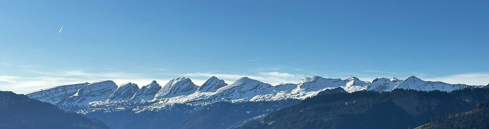

Willkommen bei Aero & Treuhand
Wer sind wir?
Daniel ist ausgebildeter Chemiker und seit vielen Jahren leidenschaftlicher Ballonfahrer. Marie-Theres ist ausgebildete Buchhalterin mit langjähriger Erfahrung.
Wir bieten gemütliche, exklusive Ballonfahrten für 2 bis 4 Passagiere ab der Region Zentralschweiz an. Das Bundesamt für Zivilluftfahrt hat der Aero & Treuhand GmbH die Bewilligung für gewerbsmässige Ballonfahrten CH-BAL BB8045 erteilt.
Marie-Theres ist verantwortlich für die Organisation der Passagiere und fährt während der Ballonfahrt das Begleitfahrzeug, welches die Balloncrew am Landeplatz abholt.
Daniel ist seit 1979 Heissluftballon-Pilot und zuständig für die Technik.